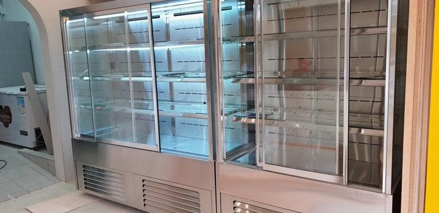
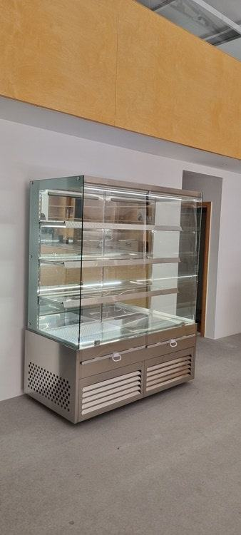
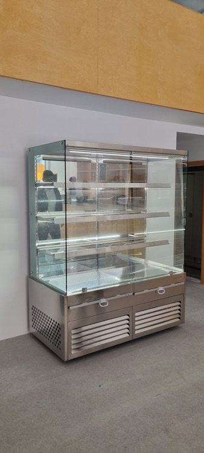
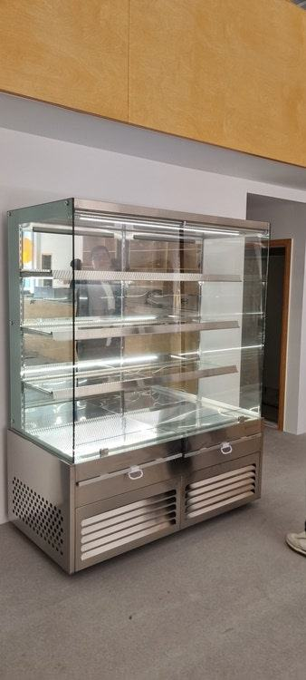

반찬(진열)쇼케이스
반찬가게 폐기 줄이는 법, 진열 쇼케이스에서 시작하세요

반찬가게 폐기를 줄이려면 하루 판매량에 맞춰 소량씩 자주 채우고, 쇼케이스 온도가 흔들리지 않게 관리하며, 먼저 만든 반찬이 앞에 오도록 진열 순서를 지키는 것이 기본입니다. 온도 변화가 적은 쇼케이스와 성에 물이 반찬에 떨어지지 않는 구조도 폐기량에 직접 영향을 줍니다.
안녕하세요. 반찬가게 진열장을 맞춤으로 설계해 온 한성쇼케이스입니다.
반찬가게 사장님들께 가장 아까운 순간을 여쭤보면 거의 같은 답이 돌아옵니다. 마감하고 남은 반찬을 버릴 때라고요.
정성껏 무친 나물이나 조림을 그대로 버리는 건 재료비만의 문제가 아니라 마음까지 지치게 합니다.
폐기는 만드는 양을 잘못 잡아서만 생기지 않습니다. 쇼케이스 안 온도가 오르내리거나, 유리에 맺힌 물이 반찬에 떨어지거나, 오래된 반찬이 뒤로 밀려 있는 것처럼 진열 단계에서 생기는 손실도 큽니다.
오늘은 쇼케이스 관리와 진열 습관으로 폐기를 줄이는 방법을 정리해 드리겠습니다.
1. 한 번에 많이 말고, 자주 조금씩
아침에 하루치를 한꺼번에 진열하면 오후로 갈수록 반찬 표면이 마르고 색이 탁해집니다. 손님 눈에는 그 반찬이 오래된 것처럼 보여 결국 남게 되죠.
쇼케이스에는 오전·오후로 나눠 판매 속도에 맞게 채우고, 나머지는 뒤쪽 보관 냉장고에 두세요. 진열 용기 크기를 조금 줄여 자주 바꿔 주는 것만으로도 반찬이 늘 갓 만든 것처럼 보입니다.
- 요일별·시간대별 판매량을 간단히 적어 보세요.
- 진열 용기는 반나절 판매량에 맞추세요.
- 보관용 냉장고와 진열용 쇼케이스를 나눠 쓰세요.
2. 먼저 만든 반찬이 앞으로
새 반찬을 채울 때 남은 반찬 위에 덧붓거나 새 용기를 앞에 두면, 먼저 만든 반찬은 계속 뒤로 밀려 결국 폐기됩니다.
용기에 만든 시간을 적은 스티커를 붙이고, 새 용기는 항상 뒤에서 넣는 습관을 들이세요.
뒤쪽에서 채울 수 있는 구조의 쇼케이스라면 이 작업이 훨씬 쉬워집니다. 손님 쪽에서는 오래된 반찬이 먼저 손에 잡히고, 사장님은 뒤에서 새 반찬을 밀어 넣기만 하면 됩니다.
마감 무렵 남은 양이 많은 반찬은 다음 날 진열량을 줄이거나 다른 반찬과 묶음 상품으로 구성해 보세요.
어떤 반찬이 자주 남는지 일주일만 기록해 보셔도 만드는 양을 조절할 기준이 생깁니다.


3. 온도가 흔들리지 않게
반찬은 한 번 온도가 올랐다 내려가면 맛과 색이 빠르게 변합니다. 뜨거운 반찬을 식히지 않고 바로 넣거나, 손님이 고르는 동안 문과 덮개를 오래 열어 두면 쇼케이스 안 전체 온도가 출렁입니다.
조리한 반찬은 충분히 식혀서 넣고, 문 여닫는 횟수가 많은 시간대에는 회전이 빠른 반찬을 문 가까이에 두세요.
설정 온도까지 부드럽게 유지하는 방식의 쇼케이스는 이런 출렁임을 줄이는 데 도움이 됩니다.
- 조리한 반찬은 식힌 뒤 넣으세요.
- 점심·저녁 피크 전 미리 채워 두세요.
4. 성에 물과 습기도 폐기 원인입니다
유리에 맺힌 물방울이 반찬 위로 떨어지면 그 반찬은 팔기 어렵습니다. 국물 있는 반찬이 많은 매장은 내부 습기가 높아 이런 일이 자주 생깁니다.
결로 물이 반찬 쪽으로 떨어지지 않고 따로 받아 내는 구조인지, 유리에 김이 덜 서리는 사양인지를 확인해 보세요.
마감 때 유리 안쪽과 바닥 물기를 닦아 내는 것도 다음 날 반찬 상태를 지키는 습관입니다.
쇼케이스 바닥에 반찬 국물이 흘렀다면 그날 바로 닦아 주세요. 남은 국물은 냄새와 세균의 원인이 되고, 그 칸에 새로 놓는 반찬까지 상태가 빨리 나빠집니다.
체크리스트
- 시간대별 판매량 기록
- 반나절 단위 소량 진열
- 용기에 조리 시간 표시
- 새 반찬은 뒤에서 넣기
- 조리 후 식혀서 넣기
- 마감 때 유리·바닥 물기 정리
현장에서 자주 보는 경우: 반찬가게 냉장고를 처음 고르실 때
반찬가게 냉장고를 알아보시는 사장님들이 자주 헷갈리시는 것이 인버터와 정속형의 차이입니다. 인버터는 적정 온도에 도달하면 속도를 조절해 그 온도를 계속 유지하는 방식이라 소음과 진동이 적고 에너지 절감에도 유리합니다.
정속형은 일정 온도를 지키기 위해 전원을 켰다 껐다 반복합니다.
청결 면에서는 유리에 성에가 생겨도 그 물이 바닥으로 떨어지지 않고 내부 물받이 그릴로 받아 내는 기능이 있으면 훨씬 위생적으로 쓸 수 있습니다.
오래 쓰는 장비인 만큼 제작 단계에서 사후관리까지 해 주는 곳인지도 함께 확인하시길 권합니다.





자주 묻는 질문
반찬쇼케이스 온도는 몇 도가 적당한가요?
반찬 종류와 양념, 수분에 따라 맞는 온도가 달라 하나의 숫자로 정하기 어렵습니다. 주력 반찬 구성을 알려 주시면 그에 맞는 운영 방법을 함께 안내해 드립니다.
인버터 방식이 폐기를 줄이는 데 도움이 되나요?
온도를 켰다 껐다 하지 않고 부드럽게 유지하는 방식이라 내부 온도 출렁임이 적은 편입니다. 다만 진열 습관과 문 여닫는 관리가 함께 따라야 효과가 납니다.
뒤에서 채울 수 있는 반찬쇼케이스도 만들 수 있나요?
가능합니다. 매장 동선에 맞춰 뒷문이나 뒤쪽 개방 구조로 제작해 선입선출 진열을 쉽게 할 수 있습니다.
매장 조건에 맞춰 만드는 한성쇼케이스
원하시는 제품 사진과 설치할 공간 사진만 보내 주셔도 매장에 맞는 구성을 추천해 드립니다.
- 전국 240여 개 A/S 전담 센터 운영
- 본사 대량 자재 매입으로 품질 대비 합리적인 가격
- 유럽제·삼성 냉각 콤프레셔 적용
- 국내 최초 쇼케이스 전문 디자이너 상주
매장 폭과 원하는 진열 구성을 알려 주세요. 실측과 견적을 안내해 드립니다.
031-986-2458